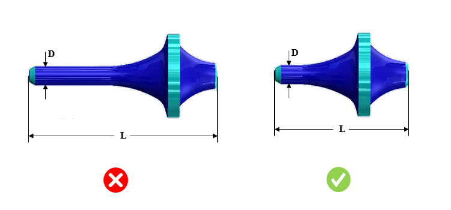

パーツの軸方向長さは、中心方向へのたわみを防ぐために、パーツの最小直径に対して適切な比率である必要があります。
長くて細いパーツの場合、自由端の中心に穴あけを行い、心押し台にデッドセンタまたはライブセンタを使用して支持する必要があります。このような支持がない場合、工具がワークに及ぼす力によって、ワークが工具から逃げる方向に曲がってしまいます。また、ワークがチャック爪内で緩み、危険な飛翔物として飛び出す可能性もあります。
たとえ心押し台で支持されていても、非常に長く細いパーツでは、中心方向へたわみが生じる可能性があります。
可能な限り、心押し台による支持を必要としないように旋削パーツを設計することが推奨されます。これは、高いアスペクト比で長い形状ではなく、短く太い形状（ずんぐりした形状）とすることで実現できます。
パーツの全長と最小直径とのアスペクト比について、デフォルトで構成されている値は 8.0 以下です。
ルールUIでは、材料の一覧が Map Material から読み込まれ、ユーザーは材料およびその値を構成できます。
材料とその値を構成した後、ユーザーは Ctrl+M コマンドを使用して、ルールUI内で材料グループおよびグレードとともに、構成済み材料の一覧をフィルタ表示できます。同じキー（Ctrl+M）を使用してフィルタをリセットすることもできます。

ここで、
L = 旋削長さ（Turn Length）
D = 最小直径（Minimum Diameter）